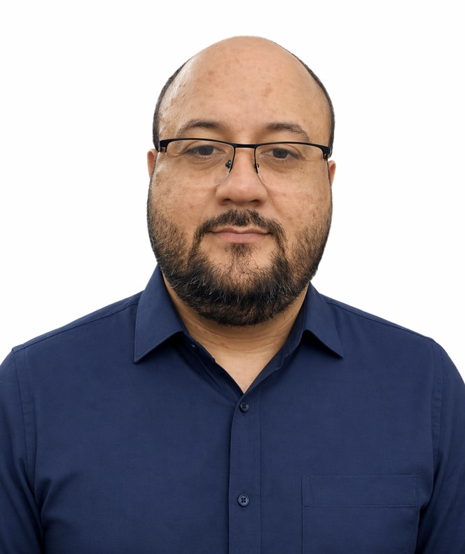

Wesley Peres
Associate Professor
Department of Electrical Engineering
Federal University of São João del-Rei
I am an Associate Professor in the Department of Electrical Engineering at the Federal University of São João del-Rei (UFSJ), Brazil. My research interests include power system dynamics, control, optimization, and stability, as well as state estimation, distribution system operation and planning, and microgrids.
I was born in Juiz de Fora, a medium-sized city in the state of Minas Gerais, Brazil. I received my B.Sc. (2010), M.Sc. (2012), and Ph.D. (2016) degrees in Electrical Engineering from the Federal University of Juiz de Fora (UFJF). I joined UFSJ in July 2014.
I have authored or co-authored more than 100 scientific publications, including 29 papers in international peer-reviewed journals, as well as numerous contributions to national and international conferences.
↓ Continue navegando pelas demais seções pelo menu acima